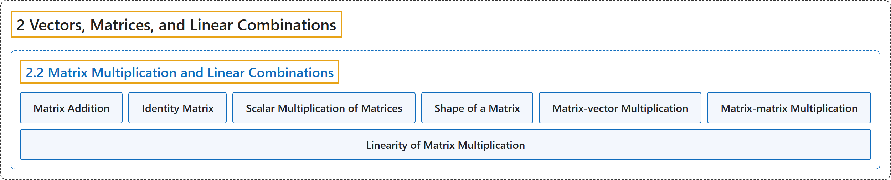

2.2 Matrix Multiplication and Linear Combinations
Classification

Glossary
| Term | Definition | 中文翻译 | Source |
|---|---|---|---|
| 2.2 Matrix Multiplication and Linear Combinations 矩阵乘法与线性组合 |
(No definition) | （无定义） | Austin, 2023, section 2.2 |
| Matrix Addition 矩阵加法 |
"This means that we may define scalar multiplication and matrix addition operations using the corresponding column-wise vector operations." | 这意味着我们可以利用相应的按列向量运算来定义数乘和矩阵加法运算。 | Austin, 2023, section 2.2 |
| Identity Matrix 单位矩阵 |
"The matrix \(I_n\), which we call the identity matrix, is the \(n\times n\) matrix whose entries are zero except for the diagonal entries, all of which are 1." | 矩阵 \(I_n\) 称为单位矩阵，它是除对角元全为 1 外其余元素都为零的 \(n\times n\) 矩阵。 | Austin, 2023, Exploration 2.2.1 |
| Scalar Multiplication of Matrices 矩阵的数乘 |
"This means that we may define scalar multiplication and matrix addition operations using the corresponding column-wise vector operations." | 这意味着我们可以利用相应的按列向量运算来定义数乘和矩阵加法运算。 | Austin, 2023, section 2.2 |
| Shape of a Matrix 矩阵的形状 |
"If we say that the shape of a matrix is \(m\times n\), we mean that it has \(m\) rows and \(n\) columns." | 说一个矩阵的形状是 \(m\times n\)，是指它有 \(m\) 行 \(n\) 列。 | Austin, 2023, section 2.2 |
| Matrix-vector Multiplication 矩阵与向量的乘法 |
"The product of a matrix \(A\) by a vector \(\mathbf{x}\) will be the linear combination of the columns of \(A\) using the components of \(\mathbf{x}\) as weights. More specifically, if \(A=\left[\begin{array}{rrrr} \mathbf{v}_1 & \mathbf{v}_2 & \ldots & \mathbf{v}_n \end{array}\right],~~~ \mathbf{x} = \left[\begin{array}{r} c_1 \\ c_2 \\ \vdots \\ c_n \end{array}\right]\), then \(A\mathbf{x} = c_1\mathbf{v}_1 + c_2\mathbf{v}_2 + \ldots + c_n\mathbf{v}_n\). If \(A\) is an \(m\times n\) matrix, then \(\mathbf{x}\) must be an \(n\)-dimensional vector, and the product \(A\mathbf{x}\) will be an \(m\)-dimensional vector." | 矩阵 \(A\) 与向量 \(\mathbf{x}\) 的乘积将是以 \(\mathbf{x}\) 的分量为权重的 \(A\) 的各列的线性组合。更具体地说，如果 \(A=\left[\begin{array}{rrrr} \mathbf{v}_1 & \mathbf{v}_2 & \ldots & \mathbf{v}_n \end{array}\right],~~~ \mathbf{x} = \left[\begin{array}{r} c_1 \\ c_2 \\ \vdots \\ c_n \end{array}\right]\)，那么 \(A\mathbf{x} = c_1\mathbf{v}_1 + c_2\mathbf{v}_2 + \ldots + c_n\mathbf{v}_n\)。如果 \(A\) 是 \(m\times n\) 矩阵，那么 \(\mathbf{x}\) 必须是 \(n\) 维向量，而乘积 \(A\mathbf{x}\) 将是 \(m\) 维向量。 | Austin, 2023, Definition 2.2.3 |
| Matrix-matrix Multiplication 矩阵乘法 |
"Given matrices \(A\) and \(B\), we form their product \(AB\) by first writing \(B\) in terms of its columns \(B = \left[\begin{array}{rrrr} \mathbf{v}_1 & \mathbf{v}_2 & \cdots & \mathbf{v}_p \end{array}\right]\) and then defining \(AB = \left[\begin{array}{rrrr} A\mathbf{v}_1 & A\mathbf{v}_2 & \cdots & A\mathbf{v}_p \end{array}\right]\)." | 给定矩阵 \(A\) 和 \(B\)，我们这样构造它们的乘积 \(AB\)：先把 \(B\) 按列写成 \(B = \left[\begin{array}{rrrr} \mathbf{v}_1 & \mathbf{v}_2 & \cdots & \mathbf{v}_p \end{array}\right]\)，然后定义 \(AB = \left[\begin{array}{rrrr} A\mathbf{v}_1 & A\mathbf{v}_2 & \cdots & A\mathbf{v}_p \end{array}\right]\)。 | Austin, 2023, Definition 2.2.10 |
| Linearity of Matrix Multiplication 矩阵乘法的线性性 |
"If \(A\) is a matrix, \(\mathbf{v}\) and \(\mathbf{w}\) vectors of the appropriate dimensions, and \(c\) a scalar, then \(A\mathbf{0} = \mathbf{0}\). \(A(c\mathbf{v}) = cA\mathbf{v}\). \(A(\mathbf{v}+\mathbf{w}) = A\mathbf{v} + A\mathbf{w}\)." | 若 \(A\) 是矩阵，\(\mathbf{v}\) 和 \(\mathbf{w}\) 是维数适当的向量，\(c\) 是标量，则 \(A\mathbf{0} = \mathbf{0}\)。\(A(c\mathbf{v}) = cA\mathbf{v}\)。\(A(\mathbf{v}+\mathbf{w}) = A\mathbf{v} + A\mathbf{w}\)。 | Austin, 2023, Proposition 2.2.6 |
References
Austin, D. (2023). Understanding linear algebra (2023 update). Retrieved October 29, 2026, from https://understandinglinearalgebra.org/home.html